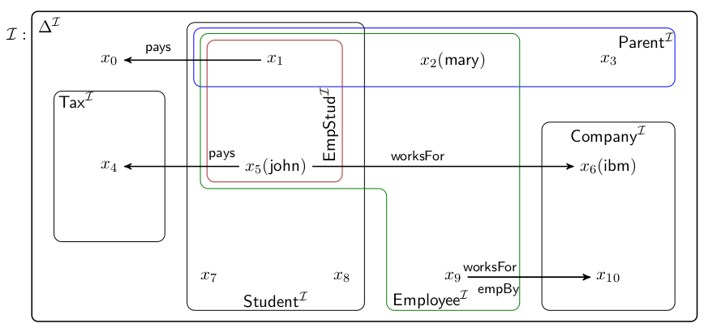

|
SDLL - Simple Description Logic Language
|
|
SDLL - Simple Description Logic Language
|
La Logica Descrittiva (Description Logic, DL) è una famiglia dei linguaggi di
rappresentazione delle conoscenze. La logica descrittiva generale si distingue da quelle spaziale, temporale,
spaziotemporale e dalla cosiddetta “fuzzy description logic”. Differisce invece dalla
Una curiosa caratteristica della logica descrittiva è la totale assenza di variabili intese in senso matematico.
La Logica Descrittiva viene usata in intelligenza artificiale per descrivere e ragionare sui concetti di un
determinato dominio applicativo e in particolare su una delle sue infinite interpretazioni possibili, intesa
come un insieme di entità che ne fanno parte (denominate individui), categorie che raggruppano queste entità in
base a proprietà di facile intuizione che le descrivono (denominati concetti), e relazioni uno-a-uno tra queste
entità che le collegano mettendo in risalto ulteriori caratteristiche (denominate ruoli).
Descrivono le entità del dominio di interesse, siano esse concrete o astratte. Queste entità, gli individui, si dicono
appartenenti al concetto. Per questo motivo, i concetti presentano una forte somiglianza con gli insiemi della teoria
degli insiemi.
Esempio:
Descrivono relazioni tra i concetti o attributi di un concetto. In particolare, stabiliamo i casi in cui un individuo
prende parte a un ruolo nei confronti di un altro individuo.
Esempio:
Gli individui denominano gli oggetti del dominio e denotano le rappresentazioni dei concetti. Un individuo può far parte
di un dominio e può prendere parte ai ruoli, come soggetto o come oggetto.
Esempio:
Le classi di base del dominio di interesse.
Esempio:
Concetti speciali: ⊤ (Tautologia, insieme universo);
⊥ (Contraddizione, insieme vuoto).
Le relazioni di base tra i concetti.
Esempio:
I nomi degli oggetti del dominio.
Esempio:
Un'intepretazione I della logica descrittiva può essere rappresentata dal seguente schema. È facile individuare i concetti atomici, gli individui e i ruoli che li mettono in relazione, le intersezioni tra i diversi concetti e le sussunzioni tra di essi.
Fonte: slide del corso ESSLLI 2018 del prof. Ivan Varzinczak c/o CRIL, Univ. Artois & CNRS Lens, Francia.